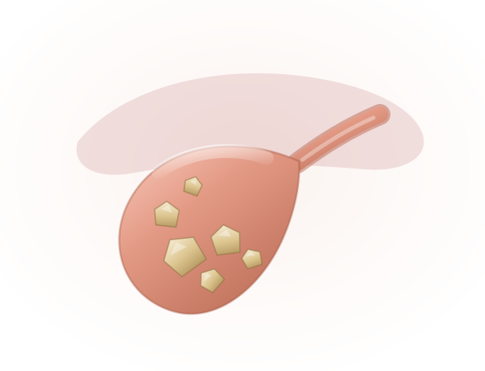
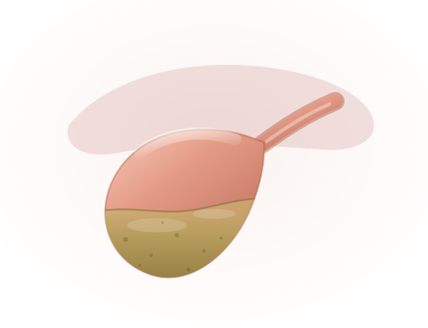
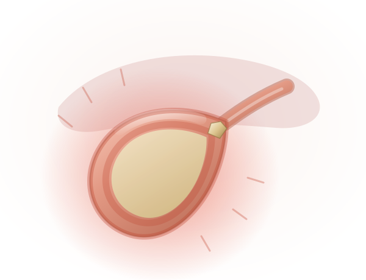
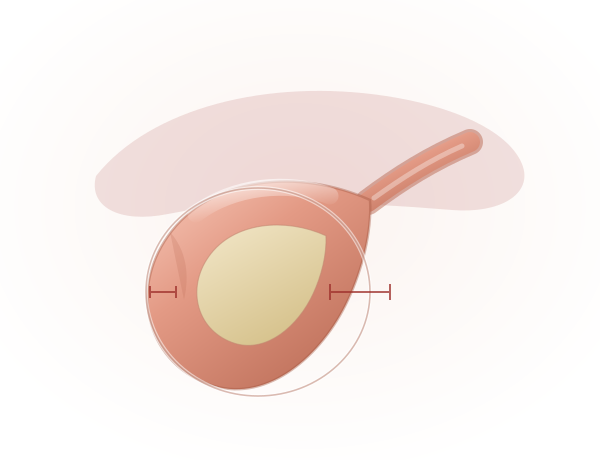
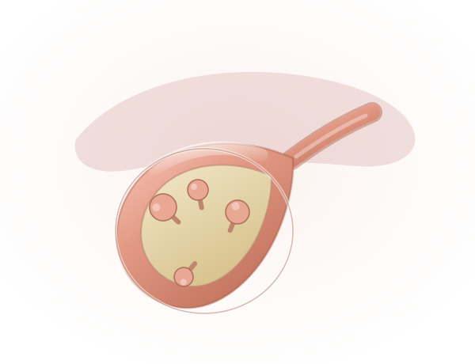
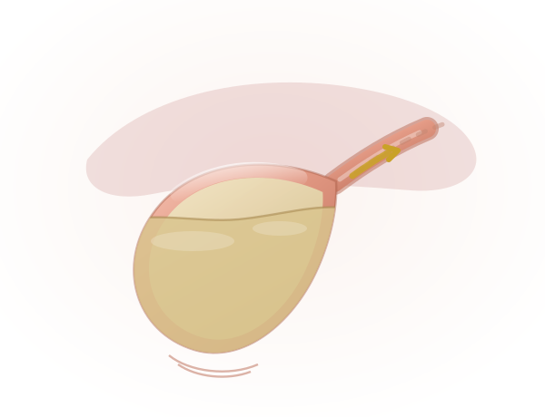
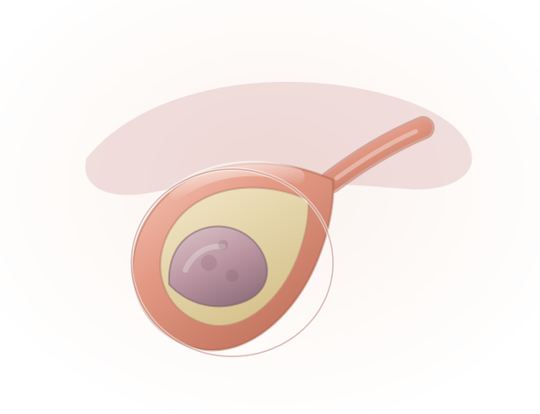

Gallstones (Cholelithiasis)
Hardened deposits that form inside the gallbladder and can block the flow of bile.
Learn moreFrom a single gallstone attack to complex bile duct reconstruction — diagnosed precisely, treated by a dedicated hepato-pancreato-biliary team, and followed up by the same specialists who operated.


The gallbladder is a small, pear-shaped reservoir tucked beneath the liver. It does not make bile — the liver does that, continuously. The gallbladder simply concentrates it and releases a portion when a meal containing fat arrives. It is plumbing, not manufacturing, which is why life continues comfortably after it is removed.
Trouble begins when bile falls out of balance and forms stones, or when the outlet blocks. A stone wedged in the cystic duct produces biliary colic: a hard, gripping pain under the right ribs that builds over an hour and often follows a rich meal. If the blockage holds, the wall inflames and infects, and the picture turns from painful to urgent.
Not every stone needs an operation. Stones found by chance, causing nothing, are usually watched. Stones that have caused pain tend to cause it again — and there, removing the gallbladder is the definitive answer, done through four keyhole incisions with most patients home the same day.
From common gallstones and biliary sludge to inflammation, structural changes and tumours, our specialists provide comprehensive evaluation and personalised care across the full spectrum of gallbladder and biliary conditions.

Hardened deposits that form inside the gallbladder and can block the flow of bile.
Learn more
Thickened, particulate bile that settles inside the gallbladder before any stone forms.
Learn more
Inflammation of the gallbladder, almost always triggered by a stone blocking the outlet.
Learn more
A cutaway view showing the gallbladder wall thickened well beyond its normal calibre.
Learn more
Small growths attached to the lining by a stalk — fixed to the wall, unlike stones.
Learn more
The gallbladder contracts weakly, so bile is retained instead of draining after a meal.
Learn more
An abnormal mass growing from the gallbladder wall itself, rather than lying loose inside.
Learn moreRecognizing the early signs of gallbladder problems can help you seek timely medical care. Explore the common symptoms associated with gallbladder conditions.
Sudden or intense pain, usually felt in the upper-right abdomen, which may occur when gallstones temporarily block the bile ducts.
Persistent nausea or vomiting may accompany gallbladder pain, particularly after consuming a heavy or fatty meal.
Fever accompanied by chills can indicate inflammation or infection and should not be ignored.
Yellowing of the eyes or skin may occur when a gallstone blocks the normal flow of bile.
Difficulty digesting fatty or greasy foods may cause bloating, discomfort, nausea, or abdominal pain.
Repeated discomfort or pain beneath the right rib cage can be a common warning sign of gallbladder problems.
Gallbladder symptoms overlap with the stomach, the pancreas and the heart. Each step below rules something out before anyone commits to surgery.
History, examination and a review of every previous report and scan you bring.
First-line imaging — finds stones, wall thickening and polyps within minutes.
Liver function, bilirubin, ALP and GGT to check whether the duct is obstructed.
Function testing and detailed duct mapping when ultrasound leaves questions.
Close-range imaging, tissue sampling, and stone clearance in the same sitting.
A written plan covering procedure, diet, recovery and follow-up schedule.
Keyhole surgery for the routine, reconstruction for the complex, and the medical care that determines how well you recover.
Keyhole removal of the gallbladder — the definitive treatment for symptomatic stones and cholecystitis. Most patients go home within a day.
Console-controlled instruments for difficult anatomy, dense adhesions or a previously inflamed, scarred gallbladder bed.
Endoscopic removal of stones lodged in the common bile duct, restoring drainage and clearing jaundice without an incision.
A stent placed across a narrowed or obstructed duct to hold it open, used for strictures and for inoperable tumours.
Roux-en-Y hepaticojejunostomy for injured or strictured ducts — the repair that decides long-term liver health, best done by an experienced team.
Removal of the gallbladder with part of the liver bed and regional lymph nodes, for gallbladder cancer that has spread locally.
Used after surgery to reduce recurrence, or as primary treatment where the tumour cannot be removed.
A structured low-fat plan for the weeks after surgery, and guidance on returning to a normal diet as your digestion adjusts.
A routine gallbladder removal is routine only until it isn't. What matters is who is holding the instruments when it stops being routine.
Fellowship-trained hepato-pancreato-biliary surgeons who handle bile duct work as their primary focus, not occasionally.
Surgeons, gastroenterologists, radiologists, oncologists and dietitians working from one shared plan.
Ultrasound, HIDA, CT, MRCP, ERCP and endoscopic ultrasound — all available before a decision is made.
A written plan for your stage, your fitness and your circumstances — with a cost estimate before admission.
Scheduled review, imaging where needed, and phone follow-up once you are home — with the same faces throughout.
Six stages, from your first appointment to discharge and review — so you always know where you are and what comes next.
Your history and existing scans reviewed by a specialist, in person or by video.
Ultrasound, blood work and duct imaging to confirm what is causing the symptoms.
Timing, approach and anaesthetic decided, then explained to you in writing.
Keyhole removal, ERCP clearance or reconstruction — as planned.
Pain control, early mobilisation and a graded return to normal eating.
Wound review, histology discussion where relevant, and diet support at home.
Detailed, plain-language guides written by our team — so the conversation in clinic starts from a better place.
Stones, sludge, cholecystitis, adenomyomatosis, polyps and functional disorders — and what each one needs.
Read the guide OncologyWho is at risk, how it is staged, when surgery is curative, and what the prognosis depends on.
Read the guide RiskHow chronic inflammation raises risk, who should worry, and when removal is the safer choice.
Read the guide Complex surgeryWhy the first repair matters most, what poor repair costs, and how to choose a surgeon.
Read the guideYes. Most people live normal, healthy lives after gallbladder removal. The liver continues to produce bile for digestion — it simply drains continuously instead of being stored. Fatty meals may need some dietary adjustment in the first few weeks, but the vast majority of patients return to a completely normal diet.
Usually not. Asymptomatic gallstones are generally left alone and monitored. Surgery is recommended when stones become symptomatic, or when specific risk factors are present:
Gallstones are present in 80–90% of gallbladder cancer patients, making them the most strongly associated risk factor — but only a tiny fraction of people with gallstones ever develop the cancer. The link is chronic inflammation: persistent stones irritate the wall, repeated injury alters the DNA of the lining cells, and prolonged inflammation can calcify the wall into a porcelain gallbladder.
After keyhole surgery most patients go home within 24 hours and return to desk work in about a week, with heavy lifting avoided for three to four weeks. Open or extended surgery takes longer — several days in hospital and six weeks or so to full activity. Your surgeon will give you a specific timeline based on what was found during the operation.
ERCP combines endoscopy and X-ray to see the bile and pancreatic ducts. A stone stuck in the common bile duct can be removed, or a stent placed to restore drainage. It is indicated when there is persistent blockage, cholangitis or jaundice — often within 24–48 hours. It is generally safe, though it carries a small risk of infection, bleeding or triggering pancreatitis.
This needs a specialist hepatobiliary team, and the timing matters. Early repair within 72 hours gives the best outcomes; repair delayed 6–8 weeks is workable; operating during active inflammation carries the highest risk of failure. Experienced teams report long-term success rates of 85–95%, against 50% or less in non-specialised settings.
Yes. For outstation patients a video review of your existing scans and reports is usually the first step, so the trip is made only when it will change something. Bring the actual films or CD rather than only the printed report, along with previous prescriptions, discharge summaries and blood work from the last three months.
We work with most major insurers and TPAs. Share your policy details at least 48 hours before a planned admission so pre-authorisation can be cleared in time; for emergencies the desk starts the claim while treatment begins. Once the treating consultant confirms the plan, the billing desk issues a written estimate covering surgery, stay, consumables and expected investigations.
Looking for more detail? Read the complete gallbladder guide below — 51 questions across six chapters.
Written for patients and families, in plain language. Open only the chapter you need — each one holds the full set of questions we are asked about that topic.
Causes vary depending on the condition:
Most benign gallbladder diseases, like gallstones or adenomyomatosis, rarely progress to cancer. However, chronic inflammation from untreated conditions may slightly increase the risk of gallbladder cancer. Regular follow-ups can help mitigate this risk.
Yes, most people live normal, healthy lives after gallbladder removal. The liver continues to produce bile for digestion, though fatty meals may require dietary adjustments initially.
Gallbladder cancer is a malignant tumour that begins in the gallbladder cells, a small organ beneath the liver that stores bile. The most common type is adenocarcinoma, which starts in the epithelial cells lining the gallbladder.
Gallbladder cancer is rare but more common in regions like India, Pakistan, South America and Eastern Europe. Women are affected more often than men, typically in their 60s or 70s.
The exact cause is unknown, but certain factors increase the risk:
Early stages often have no symptoms. As the disease progresses, patients may experience:
Imaging studies:
Endoscopic procedures:
Blood tests: liver function tests to check for bile duct obstruction, and tumour markers like CA 19-9 or CEA, which may be elevated. A biopsy confirms the diagnosis by examining tissue under a microscope.
Gallbladder cancer is staged based on tumour size, spread and lymph node involvement:
Treatment depends on the stage and the patient's health.
Surgery:
Gallbladder cancer is curable if detected early and surgically removed. Unfortunately, many cases are diagnosed at advanced stages, making treatment more challenging.
While prevention is not always possible, certain measures can reduce risk:
Prognosis depends on the stage at diagnosis:
Gallstones are solid particles that form in the gallbladder from bile components such as cholesterol, bile salts and bilirubin. They form due to an imbalance in bile composition, often made worse by:
Gallstones are present in 80–90% of patients with gallbladder cancer, making it one of the most strongly associated risk factors. However, it is essential to note that only a tiny fraction of individuals with gallstones will develop gallbladder cancer.
Gallstones contribute to risk primarily through chronic inflammation:
Yes, both influence risk:
Gallstones often cause no symptoms. However, signs that may indicate complications or gallbladder cancer include:
Yes. Cholecystectomy is the most effective way to eliminate the risk of gallbladder cancer in patients with symptomatic gallstones or high-risk conditions such as:
For asymptomatic gallstones, surgery is usually not recommended unless other risk factors are present.
Early detection is challenging because gallbladder cancer symptoms overlap with benign gallstone disease. Methods include:
While not all cases can be prevented, you can reduce your risk by:
If you have gallstones, stay vigilant about your symptoms and follow your doctor's recommendations. While the risk of gallbladder cancer is low, addressing gallstone-related complications early can prevent chronic inflammation and reduce cancer risk.
Benign biliary diseases are non-cancerous conditions affecting the bile ducts or gallbladder. Common examples include:
Symptoms range from mild discomfort to severe pain:
While not all conditions can be prevented, these steps lower your risk:
While mild cases may have little impact, severe conditions can disrupt daily life due to:
Early diagnosis and treatment significantly improve quality of life and prevent complications.
You should see a specialist if you experience:
Data insight: studies show that early surgical repair, performed by experienced hepatobiliary surgeons, has success rates of 85% to 95% in restoring normal bile flow and preventing complications.
Data insight: centres with low experience in bile duct repairs report failure rates of up to 50%, compared to 5% to 10% in high-volume, specialised centres.
Data insight: surgeries performed by experienced hepatobiliary teams achieve long-term success rates of 85% to 95%, compared to 50% or less in non-specialised settings.
Data insight: delayed repairs have a slightly lower success rate (70%–90%) than early repairs (85%–95%), but outcomes depend heavily on surgical expertise.
Bile duct cancer forms in the bile ducts, which carry bile from the liver to the small intestine. It can develop in several parts of the system:
This cancer can grow slowly and may not cause symptoms until it is advanced.
While the exact cause remains unclear, several factors may increase the risk:
Some people have multiple risk factors; others develop bile duct cancer without any of these conditions.
Symptoms can be vague and may resemble other conditions. The most common signs include:
Diagnosis often involves multiple steps, starting with a medical history review and physical exam. Key tests include:
Early detection is critical, as bile duct cancer is often diagnosed in later stages, which can limit treatment options.
Treatment varies based on the tumour's location, size and stage:
The prognosis depends mainly on how early the cancer is detected. The five-year survival rate is higher for patients diagnosed earlier, where surgery is more likely to be successful. However, bile duct cancer is often diagnosed in its later stages, which can make treatment more challenging.
Early-stage cancers that can be surgically removed have the best chance for long-term survival. For more advanced cases, treatment can help manage symptoms and improve quality of life. Because the disease is rare, ongoing research and clinical trials are essential to developing new, more effective treatments.
Surgery is the primary treatment if the tumour is localised and can be entirely removed. The type depends on the cancer's location — resection removes the tumour and a portion of surrounding tissue, including parts of the bile duct or liver.
Surgery can be curative for patients diagnosed in the early stages. However, if the cancer has spread too far, palliative treatments may be considered to improve symptoms and quality of life.
This guide is general patient information, not a diagnosis. To discuss your own reports, call +91 9211221551 or book a consultation.
Take the first step towards expert gallbladder and biliary care with PancreaCare by Advitya Healthcares.
+91 9211221551 · info@advityahealthcares.com · Reports reviewed before you travel